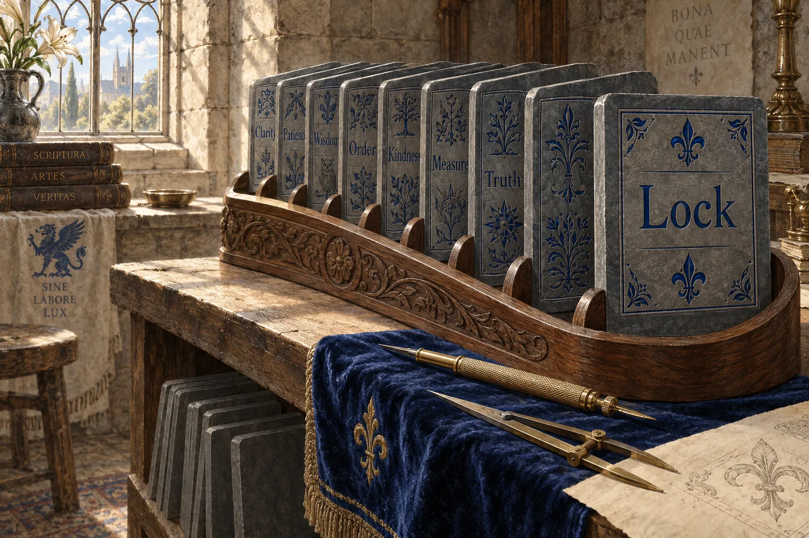
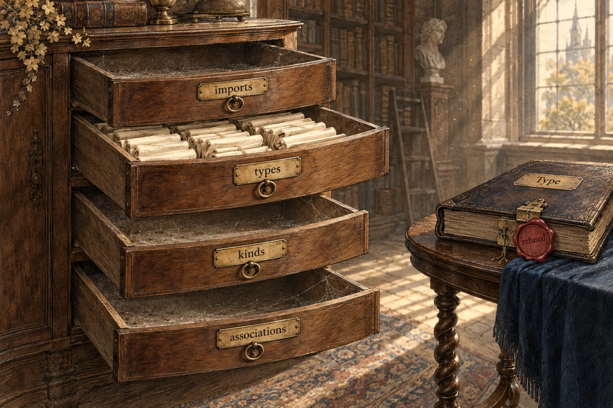

Ethos As It Stands

The verdict
I want you to reconsider if we exclude expanding ethos to do implementations (i.e., functions), which is all we would have, really. We would have implementations on objects, which are kinds actually. If we take that out then what is the state of ethos without that in the picture?
-- psyche, STT, 2026-09-25, to e51411 (flows/e51411/vision/ethos.md).
Judged only as a data-description language, Ethos is a sound core with a narrow vocabulary and loose edges.
- Excellent: types, kinds' signatures and the Library, Signal and Sema roots become exact, fully qualified Rust. Every type gets its datom derives. Refusals are typed, and freshness tests bind the 46 repos using ethos-zero.
- Broken: a variant can change meaning at a distance. Errors name a protos path, not a line. The skills write a
Typeroot the tool refuses. A contract can import a name that does not exist. - Missing: sized integers, bytes, value rules, doc comments, a real newtype, and anything Sema needs to evolve.
From the ethos audit (ethos-zero 10.0.0). Three fixes have landed since; "rerun" marks probes run again on ethos-zero 12.0.0 (89a1ee8).

The shape of a Library
A Library has four sections, in this order (ethos-zero src/lib.rs, conception.rs):
Library [ imports ] [ types ] [ kinds ] [ associations ]
Signal [ imports ] [ queries ] [ responses ] [ types ]
Sema [ imports ] [ record types ]correctionThe kinds section is real. It holds kinds' signatures and is filled in the kinds files (datom-codec-kinds.ethos, protos-kinds.ethos). An ordinary file fills types, often imports, and writes [] [] for the rest. associations is empty in every real file.
Meaning comes from position. Whether [ … ] is an enum, a vector or a section depends only on where it sits, and . means three things.
The skills' Type root is refused rerun: Conceptual.{ [] Root }. Five root vocabularies are in use across the estate, and tree-sitter-ethos describes an older one.
Broken in the tool
rerunStill so on 12.0.0:
- A variant that changes meaning at a distance.
Sel.[ Locks ]is a unit variant until a typeLocksis declared anywhere; then it isLocks(Locks). - Errors without a place. An undeclared name answers
Conceptual.{ [ 1 1 0 1 1 ] Undeclared.Undeclared }: a protos path, no line or column. There is noCheckquery. - Docs out of step. Vision/ethos.md still says
Compositional; the derive isComposing(the ethos and datom skills were corrected in Curriculum 02a3770). The README still callsName.{ T1 T2 }a tuple variant.
fixedSince the audit:
- Three
X_Dataitems from one file (fix 5). Derived names are now unique across the file:P_X_Data,Q_X_Data. - Holes (fix 6). All 17 fixtures compile,
Option/Resultare qualified, a declaredResultis refused asIntrinsic.Result,S.{ Self }asCycle.S. This now refuses datom-codec.ethos'sMeaning.Stringtoo, so that flake check fails until it goes. - Recursion under rkyv (fix 3). Recursive Signal types archive and restore; only cycle-closing edges are boxed.

Broken in use
- ethos-zero, a build dependency of 46 repos. Clean.
- core-ethos bootstrap, the
Interfaceroot, 7 repos. It emits names likepub struct z2VaBD(u64)and mapsIntegertou64. .schemathrough schema-rust (17 repos, spirit and Persona among them). spirit's.ethosfiles beside them are orphaned.
Where ethos-zero is used, the ethos is the truth: signal-flow and meta-signal-flow regenerate their Rust in build.rs and assert it equals the committed file. (Corrected: this page first said the flow's contract had drifted; that was read from a stale checkout, and the live repos agree.) What the binding cannot catch is an import of a name that does not exist: meta-signal-flow imported a RecipientDisposition that signal-flow never defined. Four repos pinned to an older ethos-zero still commit Rust deriving Compositional.
An ethos is only the truth where a freshness test binds it, and about 20% of real files (15 of 76) have none. protos and datom-codec commit generated contracts that a Nix check keeps fresh but their code never imports.

What real files cannot say
- Sized and unsigned integers. The only integer is
i64; lojix has 196 source lines that use an integer width. - Bytes and fixed arrays.
NameDigest([u8;32]);Signal<T>{bytes:Vec<u8>}copied into 3 repos. - Value rules. lojix keeps 13 "Validated" shadow types only to add checks.
- Doc comments.
;comments are dropped. - Time, maps, ordering, generic wrappers, defaults. All hand-written.
- Sema's evolution. No key, identity or migration; no field ordinals.
A name that is not a type. LockName.String and FlowId.String become pub type aliases rerun: a field name, no type safety. Authors hand-write X(String) newtypes anyway (9 in lojix and meta-signal-ethos-zero alone, dozens across the estate), and Measurement.{ String } is still accepted as a struct.
A new type generally is like
-- psyche, typed, 2026-09-08 (flows/8e9e77/vision/single-field-structs.md).name.string,age.integer, or whatever we use:int.
inferenceThose words point at Name.String emitting a newtype. Needs your ruling.

Fixes, ranked
Fix 1, whole-program syntax, is outside this book. The rest keep the audit's numbers and order. your ruling marks the ones that need you.
- 2
- 3
- 4
- 5
- 6
- 7
- 8
- 9
- 10